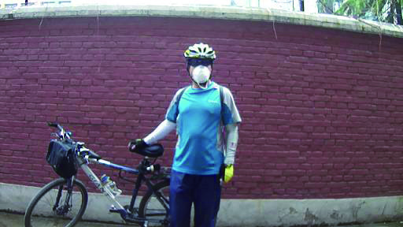
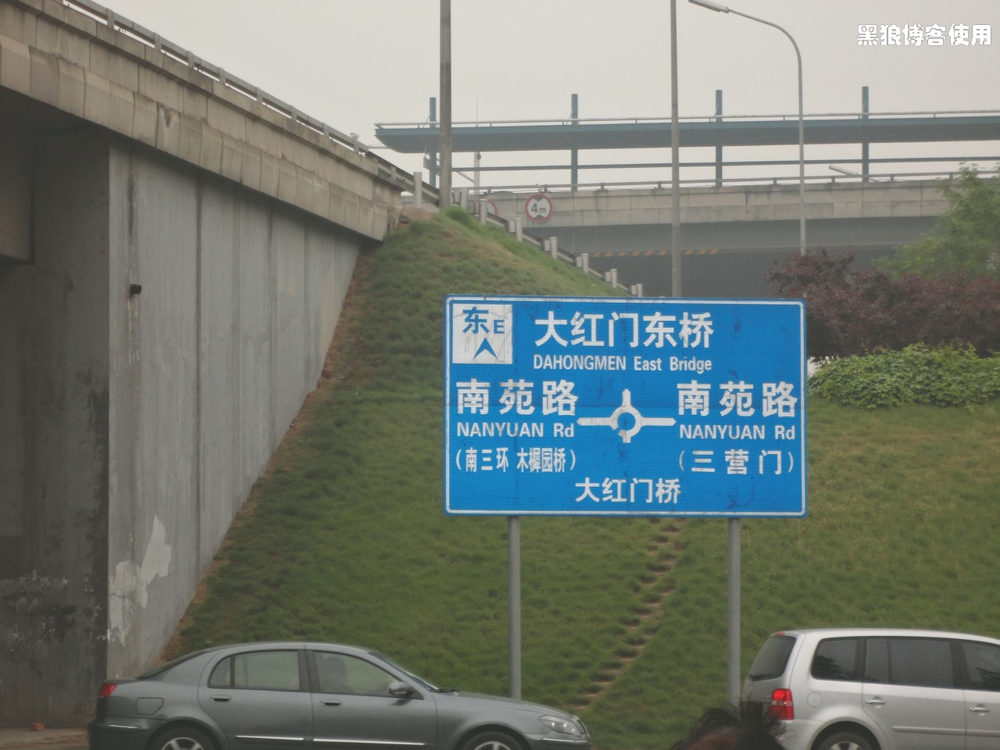
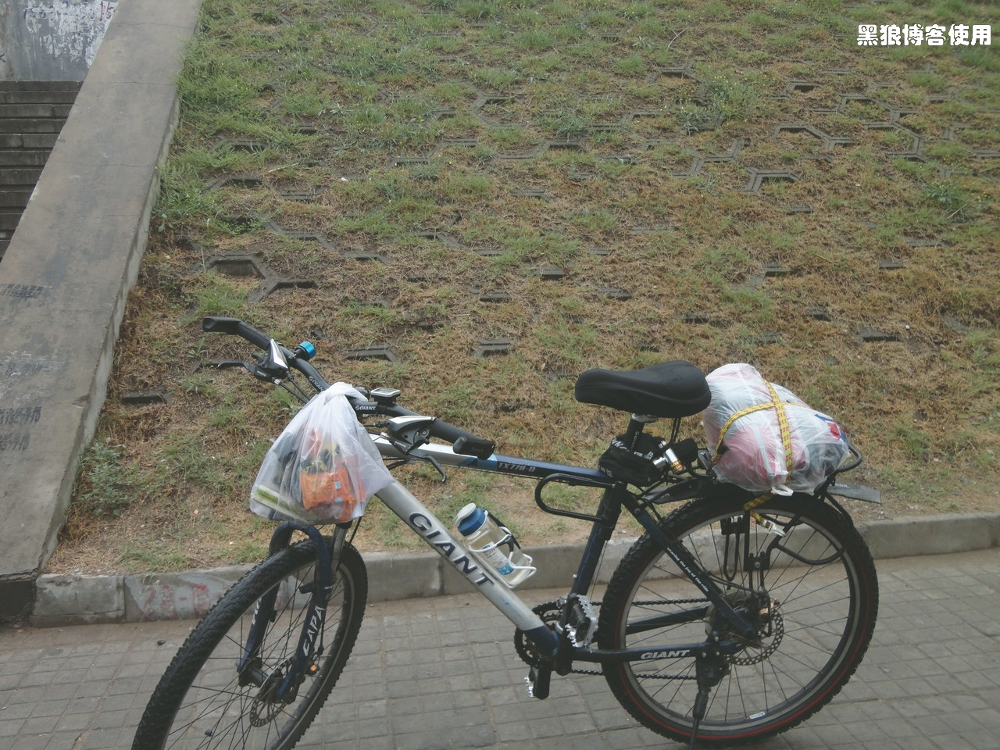
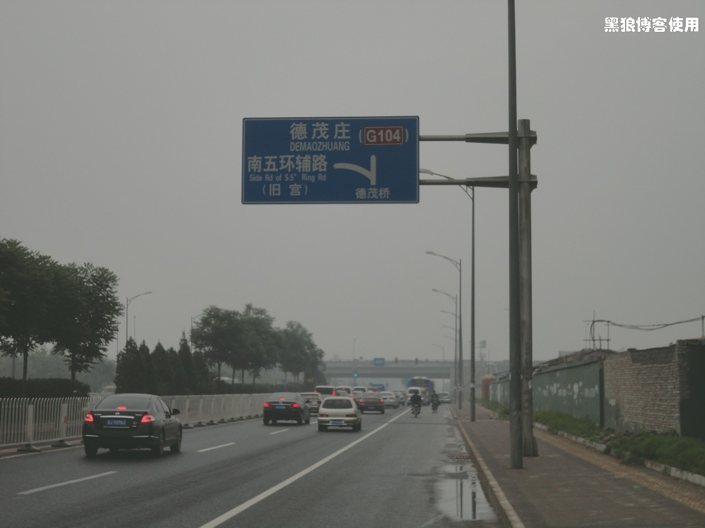

11 号下班后，出去买了件雨衣，回到家已经是晚上 9 点了。简单吃了点，就在屋子里折腾，把东西往背包里装，把背包往自行车上捆。被我老妈看见了，问我是不是明天要出去。我说：“明天我去廊坊吃驴肉面去，风雨不误”，我妈妈说：“我发现你最近确实有毛病了”。当然，有毛病不只是说我吃面条，还有就是我对小豆包、胡有理的喋喋不休。我现在确实有点絮絮叨叨了。
一早起来，本来说好了我直接出发去廊坊，临时胡有理同志犯懒不想出门，我就先单车送孩子去上课外班。唉 ~~，警告过所有人不要给我找 Trouble，还是避免不了，白白浪费了我的絮叨。
提前几分钟下楼，在出发墙边摆姿势来个照片，请了半天也没人下楼，只好自己来个自拍。
胳膊上弄了个套袖，怕太阳给晒爆皮了。头盔又买了一个黄色的，上一个送给老丈人了。还买了套分体的雨衣，上衣和裤子分开的那种，放在包里了，预防下雨。
十多分钟后，把小孩送到了上课外班的地方。天空有点阴，有零星的雨点，我就把雨衣给穿上了，刚套完雨衣，骑上单车几米远，就碰到了熟人，还说我装备专业，哈哈，难道在说我那套雨衣？
8:15 开始出发，起点是甘家口，终点廊坊，去吃驴肉面。
9:20 到了南苑路。
路上有点小雨，速度有点慢。还有背包一路上解开又绑上弄了 3 回，觉得不如有个腰包方便，把经常用的东西放进去，不用老去拆卸捆绑那个大包，胡有理同志新买个腰包放在单位了，我都说了好几遍了，她也不舍得往回拿。
雨天空气比较好，本来想把雨衣脱了，不过路上还有水，甩的腿上、车子上都是泥。
9:50 马上就是 104 国道，热、浑身是汗，感觉不是蹬自行车累的，是雨衣太厚不透气憋的。也不知道还下不下雨，先穿着吧。雨下的这么小，雨衣是脱也不是、穿也不是。
10:50 到了 G104 的 30 公里处，还是决定把雨衣脱下来。一脱才发现，雨衣的外面很干燥，就是有很多已经干了的泥点子，里面却都湿了，都是汗水。感觉有点累。大休。

这次出行，准备的东西比较全，甚至连补胎打气的工具都带上了，不过还是忘了带湿纸巾、塑料袋等，慢慢完善吧。
休息了 20 分钟，继续出发，刚脱了雨衣，上衣和裤子都被汗水湿透了，小风一吹，唰唰唰 ~~，真凉快呀。

12:05 终于到了廊坊界。刚才看指示牌，再有 10 公里就到目的地了。一路上，车、人都不多，尤其是没有看到像我一样戴着头盔骑自行车的人。
12:50 到了廊坊的兴安市场附近，离我要去吃驴肉面的地方就几百米了。这段路有点风，也有点疲惫，速度也上不去。
里程表显示总共是 75 公里，用时大约 3 个半小时。
不过，又发生悲催的事情了。我只记得吃驴肉面了，在地图上标记了这个点，却忘记了这家店的名字，转了一圈，马路两侧都看了个遍，除了看见一家驴肉火烧外，居然没发现哪家店是有驴肉面的，不死心，问了几个人也说不清楚，嘿 ~~~，不知道店名呀，又转了一圈还是没有，饿的实在不行了，家常菜吧，哎 ~~，悲催呀。
13:10 家常菜， 给的量真多，我都吃了一半了，还剩这么多呢。
吃饱喝得，到兴安市场转了转，发现无论是商品种类还是价格，跟北京的也差不多，算了，不增加重量了。
感觉时间还早，应该再休息下，路边有个门面还不错的理发店，正好头发被汗水湿了几遍，理个发吧。
理完发，继续慢慢溜达，看见一家药店，为了保护屁股，进去买了点滑石粉，交钱的时候，漂亮的女收银员问我：“是不是骑自行车往手上抹呀？”，我嘿嘿一笑：“错，往屁股上抹”。正准备出门，看见一盒阿司匹林泡腾片，特价，居然有减轻肌肉疼痛的疗效，顺便买下。
在廊坊，马路两边的店铺名称上，看见了两个新的名词：一个是比较大的饭馆门口经常有“三八席”，难道是特意欢迎女同志的？另一个词是网络休闲会所，应该就是网吧。
15:15 开始回程。来的时候是看路标，就沿着 G104 国道到了廊坊，回去的时候，使用我 Go2map 打印的地图，不走回头路。
15:50 在广阳桥附近问了好几个人才找到地图上标注的路口，看起来不像是繁华的大路。走了没多久，拐了几个弯，又开始迷路。
问了几个人，终于回到正途， 16:30 分钟，我飞驰在一条飞沙走石的村级公路上。

尘土飞扬，石子遍地。
又过了 3 段泥浆 路，终于到了北京 界，现在是 16:45，小休。
休息的时候，找了个无人之处，抓了几把滑石粉，塞在裤子里面，哇~~~，那感觉，难以述说。
弄了一片阿司匹林，放到水杯里面，继续上路。
接下来的路就比较好走了，除了有点小风，有点影响速度外，其他都好。尤其是，接下来的路，我居然没有感觉到腿的酸痛，难道是我的腿已经适应了这种强度的运动，或者是那片阿司匹林真的有作用？下次还是不能乱吃呀。
19:00 来到了东高地的首航超市，饥渴难耐，包里的东西能吃的都已经吃光了，逛超市顺便休息。酸奶、面包、运动饮料。
晚上骑车走在北京市内，戴着墨镜，一片漆黑。（下次还应该搞个夜里的眼睛，否则太影响速度）
20:20 三里河东路南口，到家。一天的总里程是 148 公里，平均时速 20.4公里 / 小时。
很遗憾，没吃到驴肉面，我老妈说那你明天再去吧，胡有理说下次多记几个店，呵呵。另外，顺便再次鄙视下网络地图，带来方便的同时，让我多转了好几个圈。
腿居然不疼，睡觉的时候也不疼。看来明天需要仔细的查查阿司匹林这个药，以后不能乱吃了。